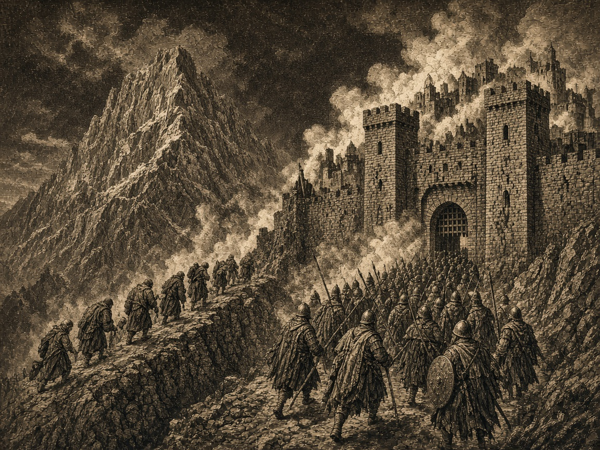

銀嶺首都モンタルジェント、あろあろ領に
侯国の首都欄が陥落 人口3,900人・領土5区画 金野では暴動十六か所が再燃

【総合部】第199期、銀嶺侯国の首都モンタルジェント（76,29）はあろあろ国の占領下になった。公報の首都欄は陥落。人口は三千九百人、兵力二万三千三百人、領土五区画まで縮んだ。あろあろとの戦にチェス＝シロバキア共和国との二正面が重なり、前期の歩兵全滅に続く打撃である。詳報は4面。
金野暴動、第二波 人民集会が町を飲み込む
金野伯爵領では食料ゼロのまま、十六か所で再び暴動が起きた。首都シャンドール（64,14）を含む町・村・都市・現代都市で、空の倉へ向かう列が伯領打倒の標語を掲げ、白波王国の兵站基地（66,16）にも殺到して壊滅させた。人口は十一万九百人から八万八千四百人へ減り、港（63,15）には自国の対人ミサイルが落ちて多数が負傷した。前期に伯爵本人は広場で火あぶりにされたが、今期は残る貴族や伯領の側近が断頭台にかけられ、集会は麦の分配も命じている。黒潮自治国は金野へ宣戦し、開戦は第204期。詳報は2・3面。
藍岬では町（84,21）がなのです主義人民共和国に、大都市（84,23）がオリョルッル王国に落ち、それぞれ食糧五万トンが徴発された。火災は二十八件・九万五千九百人。国特集は8面の白波王国。